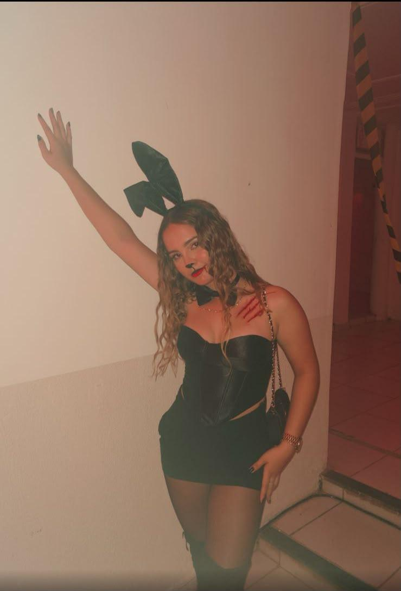

O começo
A gente se conheceu há pouco tempo. E mesmo assim, já dá para perceber que você tem um jeito próprio de ocupar os lugares por onde passa.
1 / 5
A gente se conheceu há pouco tempo.
Então pensei em fazer uma coisa diferente:
guardar alguns momentos seus em um pequeno universo.
Não é uma declaração, nem uma tentativa de definir alguma coisa. É só uma forma diferente de registrar esse começo.

A gente se conheceu há pouco tempo. E mesmo assim, já dá para perceber que você tem um jeito próprio de ocupar os lugares por onde passa.
São só cinco fotos, algumas palavras e uma experiência feita para alguém que eu conheci recentemente.
Eu queria deixar uma última tela para fechar essa pequena viagem. Sem grandes conclusões. Só uma lembrança boa desse começo.
Ana Luiza,
eu não sei ainda o que o tempo vai fazer com as histórias que começam assim — de repente, sem planejamento e sem precisar de grandes explicações.
Por enquanto, eu só achei legal guardar esse pedacinho: cinco fotos, algumas palavras e um universo inteiro montado para marcar o começo de uma nova conversa.
O resto a gente deixa acontecer naturalmente.
Sem pressa. Sem rótulo. Só continuando a conhecer.
Feito especialmente para
ANA LUIZA